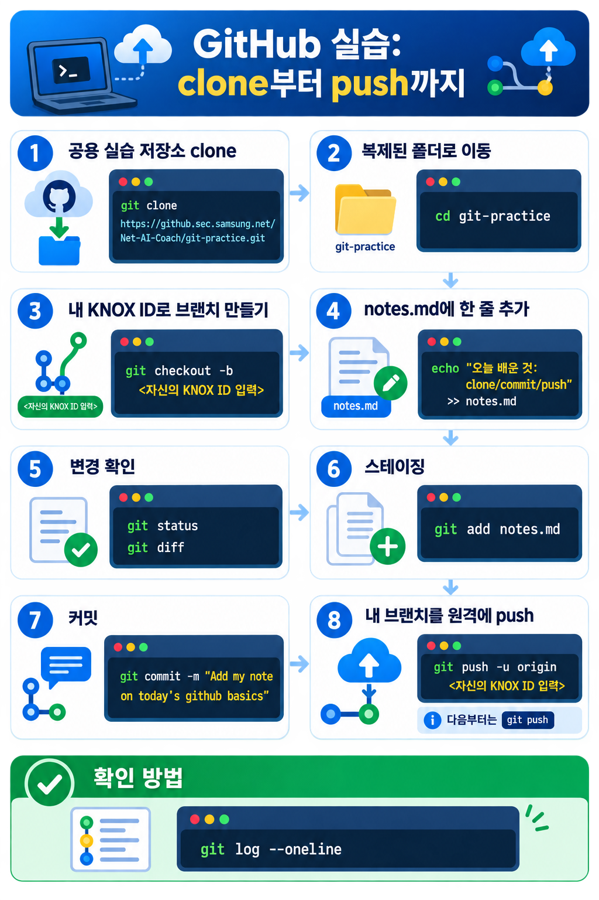

GitHub 기초¶
- 기록을 공유하는 창고
내 PC에 쌓은 Git 히스토리를 GitHub에 올려, 동료와 같이 보고 기록들을 합치는 연습을 해봅니다.
강사가 미리 만들어 둔 공용 실습 저장소를 clone해서, 파일 하나를 고치고 커밋해 원격에 올려 봅니다.
이 문서를 끝내면¶
GitHub 저장소를 내 PC로 clone하고, 변경을 커밋해 push해서, 원격 저장소에 내 변경이 올라간 것을 웹에서 확인할 수 있습니다.
전제 조건¶
- 공용 실습 저장소에 쓰기 권한이 부여된 상태여야 합니다.
- HTTPS로 작업할 PAT 또는 SSH 키를 등록한 상태입니다(아래 "인증" 절 참고). 계정만으로는 push가 되지 않습니다.
개념¶
GitHub은 원격 저장소입니다¶
앞 문서(Git 기초 - 기록 추적)에서 커밋은 내 PC 안 로컬 저장소에만 쌓이게 됩니다.
그 히스토리를 인터넷에 올려 공유하는 복사본이 원격 저장소이고, 그것을 호스팅하는 서비스가 GitHub입니다.
원격 저장소가 생기면 기록 추적의 범위가 넓어집니다.
혼자 되짚던 히스토리를 이제 팀 전체가 같이 되짚을 수 있습니다.
누가 언제 무엇을 왜 바꿨는지가 팀의 공유 기록이 됩니다.
Git이 만든 타임머신을 여럿이 함께 타는 셈입니다.
실습에서 쓰는 용어와 개념¶
{kind=link}
- Repository(저장소) - 프로젝트를 저장하는 단위입니다.
- Clone - 원격 저장소를 내 PC로 복제하는 과정을 뜻합니다. 이 과정에서 작업 기록(히스토리)까지 같이 복사됩니다.
- Remote(원격) · origin - clone하면 원본 원격이
origin이라는 이름으로 자동 등록됩니다. - Push - 로컬 히스토리를 원격(
origin)에 올립니다. - Pull - 다른 사람이 원격에 올린 변경을 내 PC로 받아옵니다.
git push origin main은 "origin이라는 원격의 main 가지로 내 로컬 히스토리를 올려라"는
뜻입니다.
인증¶
push 작업은 사내 github 에 로그인된 사람만 할 수 있습니다.
원격 저장소에 작업한 내용을 업로드(push) 하고 싶을 때는 2가지 방식 중 하나를 선택하여 HTTPS로 작업할 때는 비밀번호 대신 인증 수단을 씁니다.
방식은 두 가지이고 둘 다 github.com 계정 화면에서 등록할 수 있습니다.
- PAT(Personal Access Token)
- HTTPS로 git 작업을 할 때 비밀번호 대신 쓰는 토큰입니다.
- 계정에 2FA가 켜져 있으면 사실상 필수입니다.
- PAT는 HTTPS 전용이라, 원격 URL이 SSH 형식이면 HTTPS로 바꿔야 합니다.
- SSH
- 로컬에서 공개키·개인키 한 쌍을 만들고 공개키를 계정에 등록해 씁니다.
- 최초 설정이 PAT보다 손이 더 갑니다(키 생성 → 공개키 복사 → 계정 등록 → 연결 테스트).
비개발자 분들께는 Github Desktop 을 이용하여 관리 하는 것을 추천합니다.
GitHub Desktop은 Git 명령어를 터미널에 직접 입력하지 않고,
마우스 클릭과 화면 위 버튼으로 코드 변경 내역을 저장(commit)하고 서버에 올리는(push) 작업을 할 수 있게 해주는 GUI 프로그램입니다.
{kind=link}
손으로 해보기¶
아래 명령을 한 번에 한 줄씩 입력하고 결과를 눈으로 확인하면서 따라 해보세요
"clone → 이동 → 내 브랜치 만들기 → 파일 수정 → 확인 → 스테이징 → 커밋 → push → 웹 확인" 순서로 로컬 히스토리를 원격에 올리는 전체 흐름을 익힙니다.
(전체 흐름 이미지)GitHub 실습의 clone부터 push까지 흐름
{kind=link}

-
공용 실습 저장소를 clone하세요. 이 교육에서는
Net-AI-Coach/git-practice를 씁니다.
계정 정보 입력을 요구하는 경우 아래와 같이 조치하세요
아래와 같이 터미널 화면이 나오면 < > 부분에 자신의 id/ 비밀 번호를 입력하여 인증하세요.
-
복제된 폴더로 이동하세요.
-
나만의 브랜치를 만들어 그 위로 옮겨 가세요. 브랜치 이름은 남과 겹치지 않게 본인 KNOX ID로 정합니다.
-
notes.md에 한 줄을 추가하세요. 편집기로 열어 써도 되고 터미널로 하려면 다음처럼 합니다. -
무엇이 바뀌었는지 확인하세요.
-
변경을 스테이징에 올리세요.
-
커밋하세요. 메시지는 이 커밋만 보고도 무엇을 바꿨는지 알 수 있게 씁니다.
-
내 브랜치를 원격에 push하세요. 브랜치 이름은 3단계에서 만든 것과 같아야 합니다.
-u는 앞으로 이 브랜치가 원격의 같은 브랜치를 기본으로 바라보게 묶어 둡니다.다음부터는
git push한 줄이면 됩니다.
확인 방법¶
-
로컬 히스토리에 방금 쓴 커밋이 맨 위에 있는지 확인하세요.
-
연습 저장소 를 웹으로 열어, 브랜치 선택 메뉴에서 내 브랜치를 고르세요.
-
기본 브랜치(
main)이 아니라 내 녹스 아이디로 만든 브랜치에서notes.md가 보이고, 웹 화면과 내 PC가 같은 내용이 있으면 성공입니다.